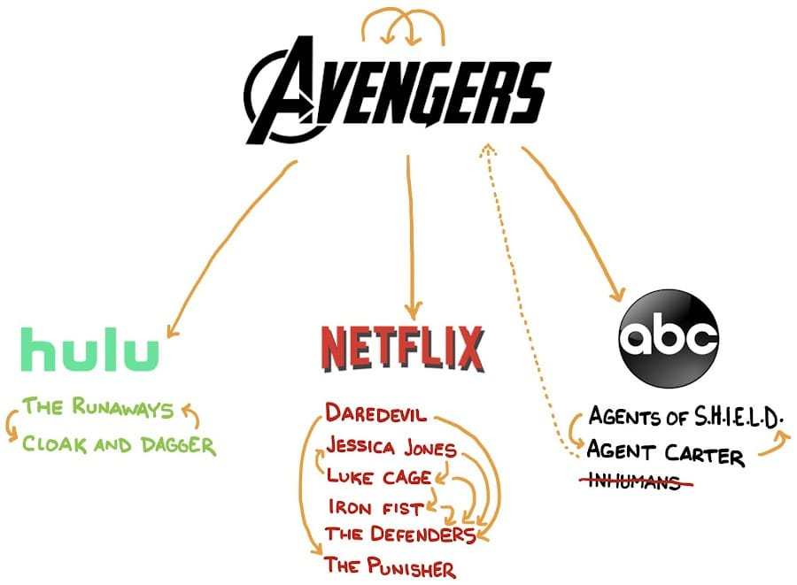
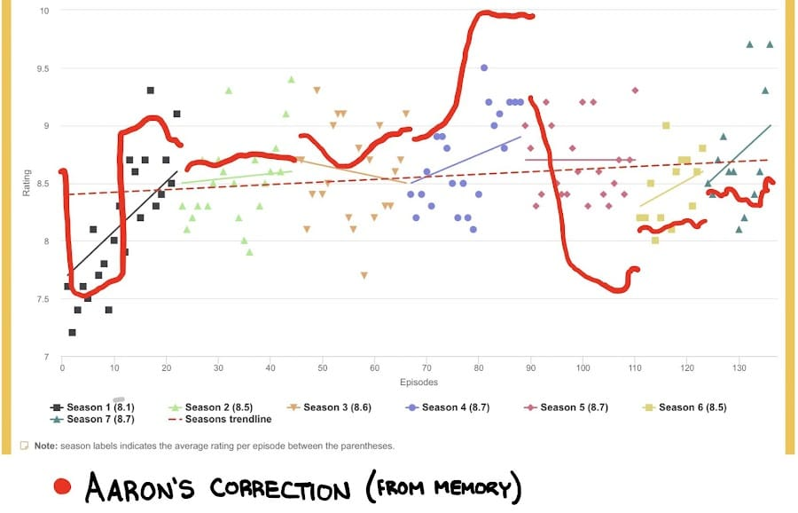

This Wednesday (8/12/2020) was the series finale of Marvel’s Agents of S.H.I.E.L.D. If you’ve never watched the show, which frankly is all of you (except maybe ~2?) just go ahead and skip riiiight down to that Top 5 and quote. They aren’t related.
The debut of Agents of S.H.I.E.L.D. on ABC back in 2013 was tied in with probably my highest Marvel Cinematic Universe hype. This was back when I was making spreadsheets to track the in-continuity storyline. This was back when I bugged my fiancé about superhero shows incessantly. Believe it or not, things are actually very different now… but this Column isn’t about now, it’s about S.H.I.E.L.D., and my relationship to it.
A Multi-Platform Universe
The concept that came with this show was one of a television show that closely tied in with a series of movies, in real time. They were to play off each other, storylines weaving back and forth between them. For the first couple of seasons, that was still (essentially) the promise. Sometime around the introduction of the Netflix, it started to dawn on me… “it’s all connected” had a huge asterisk.
It’s All Connected*
*to the movies. Also the platforms will never recognize the existence of the other platforms. The ABC shows will never reference the Netflix shows. The Hulu shows will never reference ABC or Netflix. Netflix will never reference ABC or Hulu.
It was somewhere around this realization that I sort of “gave up” on caring too much about Agents of S.H.I.E.L.D., or Daredevil/Jessica Jones/Luke Cage/Iron Fist/The Defenders/The Punisher on Netflix, or The Runaways/Cloak and Dagger on Hulu.

That dotted line between Agent Carter and the Avengers movies is Edwin Jarvis. The actor that was cast to play him in Agent Carter DID show up and have one speaking line in Avengers: Endgame.
I want to see a graphic like that, but more detailed. All 23 movies and all 29 season TV shows, with arrows between them representing direct references. Something more substantial than a throwaway line. Nothing in Doctor Strange cares about Guardians of the Galaxy Vol 2, for example. Maybe I’ll work on this in my spare time at some point. I’ve only seen 25 of those 29 seasons.
It LOOKS like the Disney+ shows are going to be first-class citizens of the MCU. I read somewhere that Kevin Feige outright said that plotlines from the shows will be addressed in later movies. So maybe I’ll be on board for those.
Agents of S.H.I.E.L.D. Major Story Arcs
Agents of S.H.I.E.L.D. was a dense show. One thing I always appreciated about it was how quickly they moved on. Things other shows would turn into an entire season tended to be 3 to 6 episode arcs. There were so many, I think I’ve forgotten about most of them.
Season 1
- Monster of the week phase. The show started with a dozen episodes that boiled down to a “monster of the week”. It was chore to get through, but worthwhile.
- Project Centipede. Hard meh.
- Who is the clairvoyant? This bit was alright, it was the first major serial storyline.
- How did Coulson come back to life? It was very interesting (this time) T.A.H.I.T.I. is a magical place.
- Who is Hydra, who is S.H.I.E.L.D.? This was awesome.
- Coulson is drawing mysterious symbols. Sure.
- Garett is the new Dethlock. Meh.
Season 2
- Hunter and Bobbi are a thing. Ugh I miss them.
- Fitz has a broken brain. Bummer to watch. First moments where we learn Iain De Caestecker is the best actor on the show.
- The Absorbing Man. He was good - but underutilized.
- Daniel Whitehall is looking to steal Inhuman abilities.
- Can Ward be redeemed? Interesting. A worthwhile storyline. Ultimately they made the right call.
- Who are Skye’s parents? Meh. The answer was pretty alright, actually.
- Skye and Raina get superpowers. That was super exciting at the time.
- Afterlife, the inhuman sanctuary. Sort of a slow down. Some good character stuff with Skye… but also the introduction of Lincoln.
- Lincoln. Terrible. Not a good character. Not a direction the series needed to go. Skye crying about boys is not interesting or fun.
- Jaiying wants to turn the whole world inhuman. Completely forgot about this.
- Coulson’s robot hand. Nice.
Season 3
- What happened to Simmons when she got sucked into the big alien rock? This was resolved in a few episodes, which I appreciated. It also had probably the most interesting episode ever, the offworld “let’s see what happened to Jemma” episode. Remember when she fell in love with some other dude? That happened!
- There’s Terrigen in Fish Oil pills! This was very exciting. It sort of got forgotten about quickly, though.
- Yoyo is bad, then good. Yoyo was fine. She was never given anything interesting to do, really.
- May’s ex-husband is huge Inhuman-hunting Inhuman monster. Not bad.
- What’s the Monster on the planet that Simmons was stuck on? This one had huge implications in the lore, but the whole “Hydra is actually a secret religion for an Inhuman monster that was banished to another planet” thing is definitely never getting brought back up. Hive is a zombie-making monster.
- Ward is Hive now. Sure. Glad to see Brett Dalton given more to do.
- Ward is going to make the whole world Inhuman? I have zero recollection of this.
- Who is going to be in the Quinjet when it explodes?” This was a well-done TV Mystery. And it was great to get rid of Lincoln. Dude sucked.
Season 4
- The new S.H.I.E.L.D. directory, Jeffrey Mase, what’s his deal? He good? This was really well done. That character was very well written, the actor did a stellar job. Such a great character, in retrospect.
- The Watchdogs are racist against Inhumans. I forgot about this. They aren’t overly utilized.
- Skye/Daisy goes goth for a bit. Meh.
- There are ghosts. Literally ghosts. Such a left turn. Turned out it was more about an evil book, the Darkhold, though.
- Ghost Rider is a ghost hunter. Awesome. The introduction of the Spirit of Vengance and what they did with it were both so well done.
- Daniel Ratcliffe helps S.H.I.E.L.D. I sort of forgot about this nuance. This is where Aida reads the Darkhold, which is what caused the whole subsequent slide into evil. This season really is the best one.
- Life Model Decoys are invented by Daniel Radcliffe and Fitz.. Yes. Get pumped.
- The Superior. The Russian Watchdogs leader. He was an alright character. He gets lost in the other parts of the season. I like how he wound up becoming a robot, which he hated so much. That reveal was cool.
- Slowly, we realize that the team has been replaced with L.M.D.s… who’s real? This was the beginning of the best part of the show. This part has by far and away the best episode of the series, season 4 episode 15, “Self Control”.
- Everyone is put into “The Framework”. This continued the incredibly interesting and well done “who can we trust” storyline with a incredibly interesting and well done “what’s the new world like” storyline. Season 4 is easily the best season. this is the best part of the best season. This show will be fondly remembered largely because of the heavy lifting from the back half of Season 4.
- S.H.I.E.L.D. has been replaced by Hydra.** Yes. Fitz leads it? Double yes. The whole thing was orchestrated by Aida who has a sort of weird robo-crush of Fitz? Dude.
- WARD IS BACK… AND SECRETLY S.H.I.E.L.D. YES. SO HARD YES. THIS WAS THE BEST THING THIS SHOW EVER DID.
- Mack wants to stay in the Framework. Again, this is the best writing in the show.
- Aida is a real girl… but with all the powers. And Ghost Rider is the only person who can stop her. This I forgot about. There’s a tiny lull right before the last episode of the season.
- Boom. Coulson took on the spirit of vengeance to kill Aida, and sacrificed himself in the process. This was such an awesome reveal. And a fitting end for Coulson.
Season 5
- S.H.I.E.L.D. in Spaaaaace!”**. I was so high on the show at this point… it’s a bummer this wound up sucking so hard.
- The introduction of Deke. Weird that one of my favorite characters in the show was introduced at the same time the show started sucking.
- S.H.I.E.L.D. are actually in the future and possibly Daisy ruined the earth? Could have been interesting.
- Kasius, the new big bad. This starts a trend of terrible villains that plague the show for the rest of its life. He was probably the worst one. This was uninteresting, unfun, and the beginning of me dropping from “huge fan, no reservations” to a “you just gotta appreciate it for what it is” status.
- The Introduction of Chronicoms & Enoch. I like Enoch. I hate the Chronicoms. I forgot they were introduced this early.
- Can we change the future? Minorly interesting.
- Deke is sent back to the past. Great move. Kept a good character.
- Ruby is the big bad. Completely forgot about her.
- General Talbot is Graviton. This was mostly fine. Him really wanting to be an Avenger and fight Thanos was pretty solid.
- Quake fights Talbot. She never gets even remotely close to this powerful again.
- Coulson retires to Tahiti to die. Sure. Would have been an okay end the show.
Season 6
- Fitz and Enoch are stuck in space. This was pretty alright.
- Coulson is Sarge, the new big bad. Turns out Clark Gregg makes a great bad guy.
- Alien bats are taking over the world. Meh.
- Aizel is also a big bad, the person who Sarge wants to kill. Aizel sucks.
- Coulson and Aizel aren’t really enemies, they are the same species and whatnot. Maybe Coulson is in there?. Meh.
- The whole ancient Incan temple and portals to another world. The end of season 6 is forgettable.
Season 7
- Simmons from the future comes to take them back to the past. This set up a fun, if terribly flawed season.
- Agents of S.H.I.E.L.D. time travel through the ages of the MCU. This was a really fun bit. Set up a lot of niche one-off episodes that were good.
- The Chronicoms want to take over earth and Fitz is hiding. The Chronicoms were so dumb. I really want to learn why the best actor in the show wasn’t in the vast majority of its final season. Some brief research reveals no explanation. Surely it wasn’t just “the best idea they had”. That’s garbage. It didn’t even make sense in the story of the show.
- The final reveal, Fitz was in the original timeline. I haven’t figured out how any of this makes sense yet. I don’t really care. The season had some fun moments. Ultimately, I’m very glad the show is over. It probably went on for 3 more seasons than it should have.
Final Thoughts
S.H.I.E.L.D. was such a weird show. A mix of really great twists you genuinely didn’t see coming tossed in with the most obvious tropes ever. It would bounce back and forth between being genuinely great, and genuinely embarrassing. It was, on the whole, worth the watch. I don’t know if I’ll ever revisit all 136 It’s a shame the trajectory of the show was so inconsistent.
The Graphic this Whole Post Lead To
This was why I wanted to write this post. So I could draw this:

The super high rating for the most recent episodes in that underlying graphic (which is from this super handy website, by the way is more of a reflection of the fact it’s so new. They will tamper down over time.
Alright. Done with Agents of S.H.I.E.L.D. forever now.
UNRELATED Top 5: Names Ruined by Pop Culture
- Meg - ruined by Family Guy’s Meg Griffin
- Karen - the latest victim of name-ruining. For whatever reason this has become representative of out-of-touch conservative middle-aged women.
- Larry - ruined by Parks and Rec’s Larry Gergich
- Gary - ruined by Parks and Rec’s Gary Gergich
- Jerry - ruined by Rick and Morty’s Jerry Smith… AND Parks and Rec’s Jerry Gergich
Quotes
Your habits aren’t necessarily the best way to solve the problems you face; they are just the methods you learned to use.
James Clear - random selection of wisdom from Atomic Habits, which I just finished re-reading